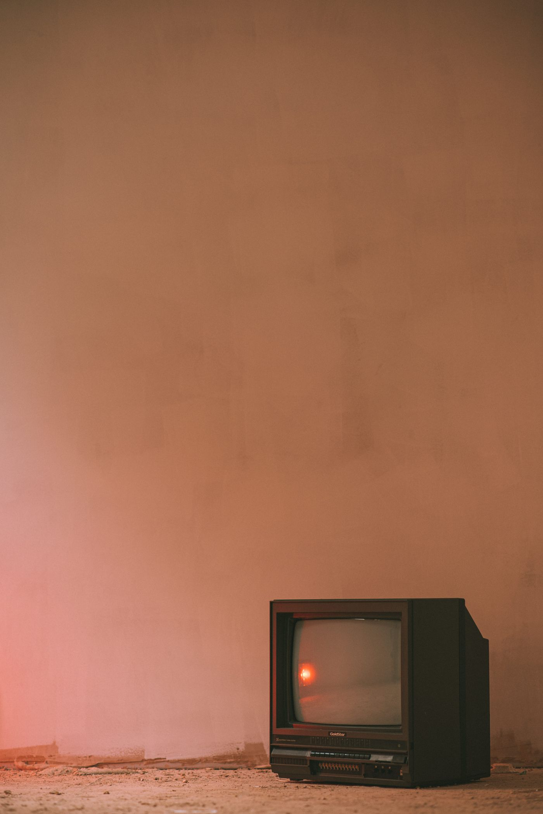
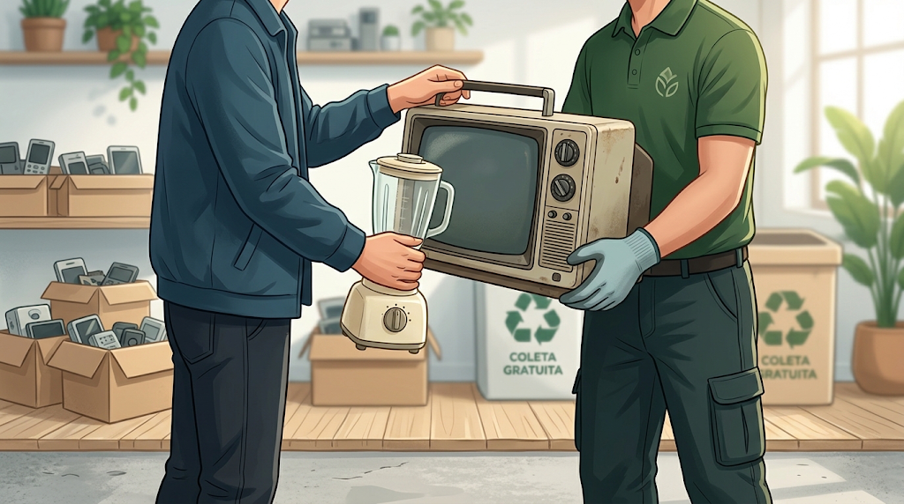
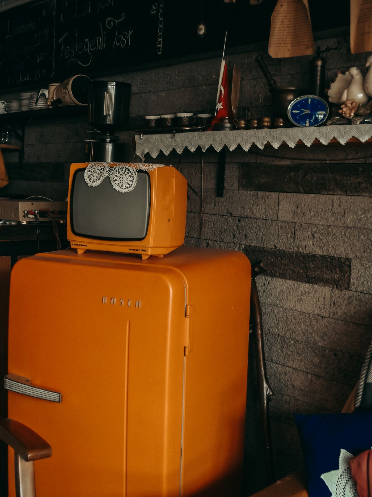
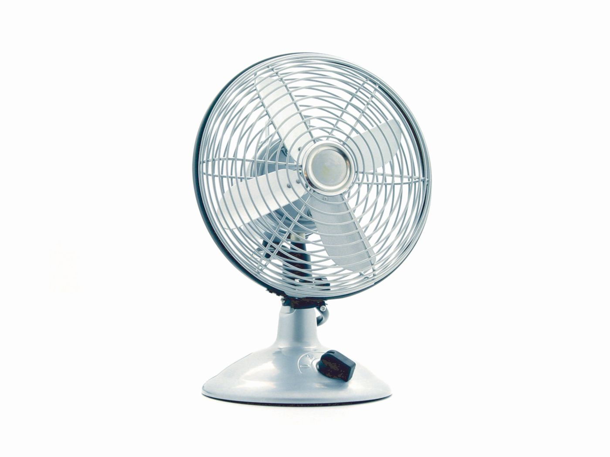
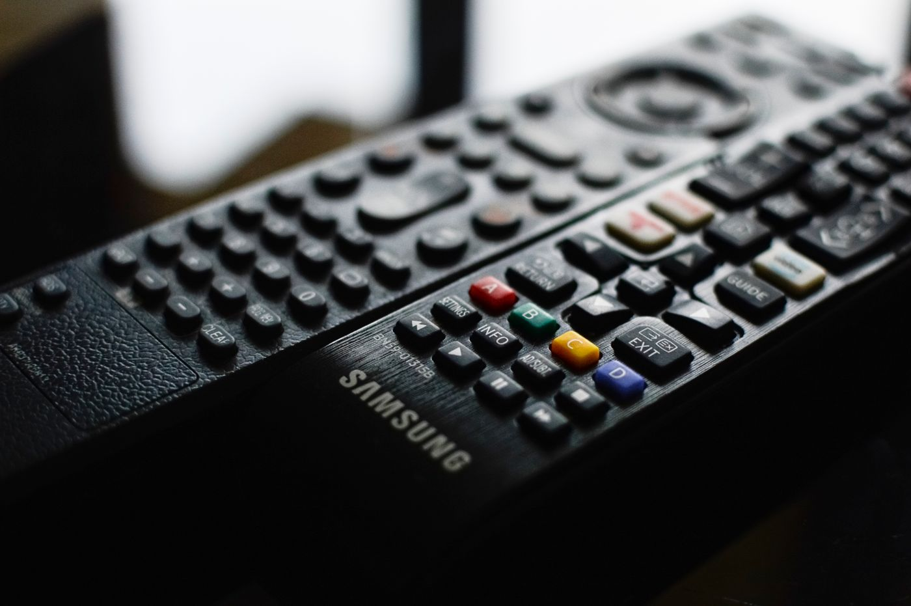
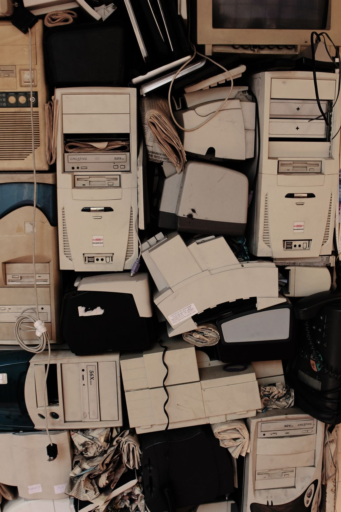
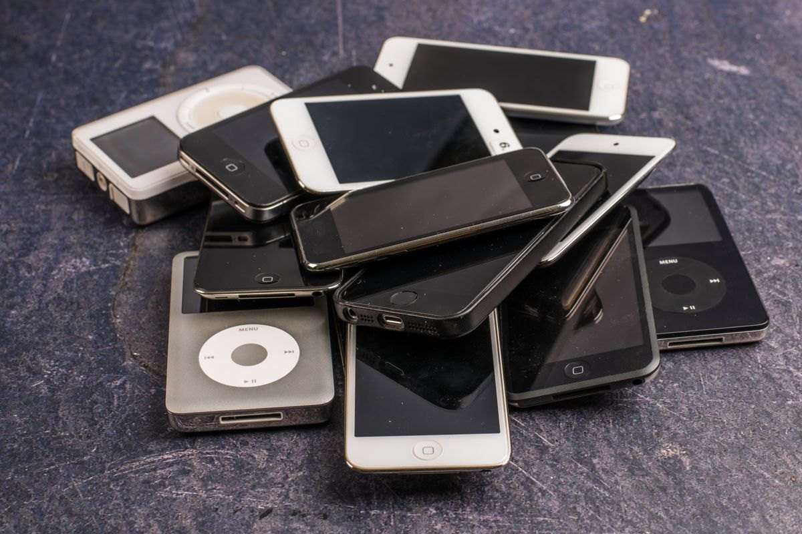

TVs e monitores
Televisores antigos, telas e aparelhos de som.
Coletamos eletrônicos e eletrodomésticos antigos, quebrados ou com defeito em São Paulo e no litoral. Consulte o atendimento na sua cidade e agende pelo WhatsApp.

Agende sua coleta gratuita e consulte a disponibilidade na sua cidade com a equipe da DK Eco Soluções.

Coletamos eletrônicos e eletrodomésticos antigos, quebrados ou com defeito, como geladeiras, TVs, ventiladores e pequenos aparelhos. Consulte a disponibilidade na sua cidade.

Televisores antigos, telas e aparelhos de som.


Geladeiras, ventiladores e outros aparelhos sem uso.

Controles, secadores, cabos e carregadores.


Computadores, notebooks, celulares e acessórios.
Envie os itens e sua cidade para consultar a disponibilidade e combinar a coleta.
Liste os equipamentos e, se puder, diga a quantidade.
Informe sua cidade para a equipe confirmar o atendimento e as condições.
Com a coleta confirmada, alinhe os detalhes diretamente com a equipe.
A DK Eco Soluções nasceu em 2026 de uma necessidade comum: encontrar uma forma prática e responsável de encaminhar aparelhos eletrônicos e eletrodomésticos sem uso. Ao perceber a dificuldade de encontrar esse tipo de serviço, transformamos o desafio em uma iniciativa para facilitar a coleta e incentivar o descarte consciente.
Nosso propósito é ajudar a liberar espaço e apoiar a destinação responsável desses equipamentos, aproximando praticidade e cuidado ambiental.
Facilitar a coleta e a destinação responsável de eletrônicos e eletrodomésticos, promovendo conscientização e o reaproveitamento de materiais sempre que possível.
Ser referência regional em coleta e logística reversa de resíduos eletrônicos, reconhecida por facilitar o descarte consciente e inspirar práticas sustentáveis.
Tire suas dúvidas e consulte pelo WhatsApp se a coleta está disponível na sua cidade.
Sim. A coleta não tem custo. Consulte a disponibilidade do atendimento na sua cidade.
Sim. Coletamos eletrônicos e eletrodomésticos antigos, quebrados ou com defeito. Consulte a disponibilidade na sua cidade para confirmar o atendimento.
TVs, geladeiras, ventiladores, secadores, controles, computadores, celulares e outros itens eletrônicos. Se não encontrar seu aparelho na lista, pergunte à equipe.
Atendemos em São Paulo e no litoral paulista. Envie sua cidade pelo WhatsApp para confirmar a disponibilidade e combinar a coleta.
Diga quais itens deseja descartar, a quantidade aproximada e sua cidade. Assim a equipe pode orientar você.
Coleta gratuita em São Paulo e no litoral paulista. Consulte a disponibilidade na sua cidade.